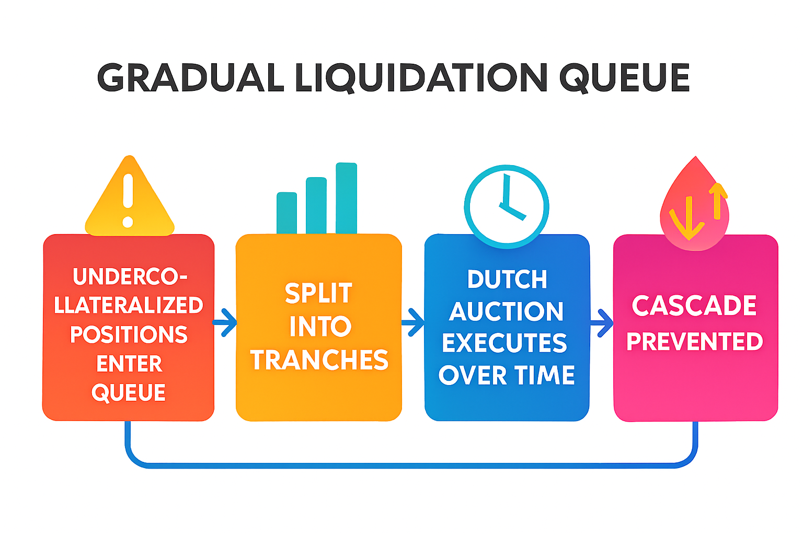
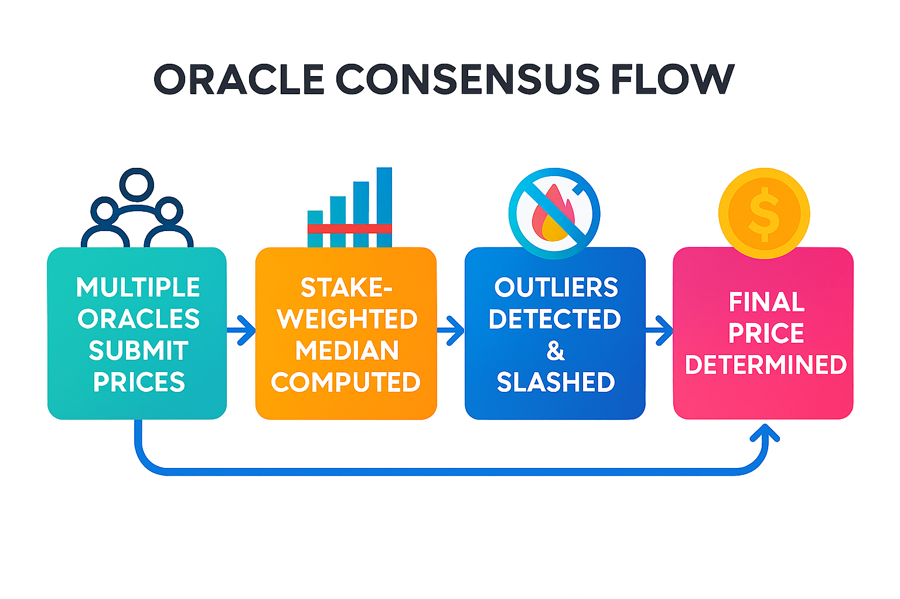

NERGE PROTOCOL — LIGHT PAPER
A Next‑Generation DeFi Infrastructure for Safer, Fairer, and More Efficient Markets
1. Overview
Decentralized Finance has grown into a global financial ecosystem, yet core infrastructure still suffers from structural weaknesses: impermanent loss, MEV extraction, liquidation cascades, and oracle manipulation. These issues erode user trust and limit institutional adoption.
Nerge Protocol introduces two mathematically‑engineered systems designed to solve these problems at their root:
- ACL‑DEX — an Adaptive Concentrated Liquidity DEX with built‑in impermanent loss protection and MEV‑resistant batch auctions
- P2PH Lending — a Peer‑to‑Pool Hybrid lending protocol with gradual liquidations and Byzantine‑resistant oracle consensus
Together, they form a unified, secure, and capital‑efficient DeFi ecosystem built on the Sui blockchain.

graph TD
DEX[ACL-DEX]
Lending[P2PH Lending]
DEX -->|Batch Auctions| MEV[MEV Resistance]
Lending -->|Gradual Liquidation| Liquidation[Liquidation Protection]
Oracle[Oracle Consensus] --> OracleIntegrity[Oracle Integrity]
MEV --> Core[Nerge Protocol Core]
Liquidation --> Core
OracleIntegrity --> Core
graph TD
DEX[ACL-DEX]
Lending[P2PH Lending]
DEX -->|Batch Auctions| MEV[MEV Resistance]
Lending -->|Gradual Liquidation| Liquidation[Liquidation Protection]
Oracle[Oracle Consensus] --> OracleIntegrity[Oracle Integrity]
MEV --> Core[Nerge Protocol Core]
Liquidation --> Core
OracleIntegrity --> Core
2. ACL‑DEX: Adaptive Concentrated Liquidity DEX
ACL‑DEX is designed to eliminate the two biggest risks for liquidity providers: impermanent loss and MEV attacks.
2.1 Impermanent Loss Protection (ILP)
Traditional AMMs expose LPs to losses when asset prices diverge. ACL‑DEX solves this through synthetic payoff replication, using a protocol reserve fund to automatically compensate LPs at withdrawal.
This is not an options market. No options are issued, traded, or exercised. Instead:
- Mathematical models (Black‑Scholes, Merton Jump‑Diffusion) determine protection parameters
- LPs pay a small continuous fee
- The protocol reserve pays out protection automatically
This transforms liquidity provision from a speculative activity into a predictable yield strategy.
igure 2A: IL Protection Flow

graph TD
LP[LP Deposit]
Params[Protection Parameters Set]
Fees[Fees]
Reserve[Reserve Fund]
Measure[IL Measured at Withdrawal]
Payout[Automatic Payout]
LP --> Params --> Fees --> Reserve --> Measure --> Payout
graph TD
LP[LP Deposit]
Params[Protection Parameters Set]
Fees[Fees]
Reserve[Reserve Fund]
Measure[IL Measured at Withdrawal]
Payout[Automatic Payout]
LP --> Params --> Fees --> Reserve --> Measure --> Payout
Figure 2B: IL Protection Flow

2.2 MEV‑Resistant Batch Auctions
Instead of processing trades sequentially (which enables front‑running and sandwich attacks), ACL‑DEX uses uniform‑price batch auctions:
- All trades in a short interval are executed simultaneously
- Everyone receives the same clearing price
- Transaction ordering becomes irrelevant
This eliminates MEV extraction and reduces slippage for all traders.
Figure 3: Batch Auction Mechanism

graph TD
Orders[Orders Collected]
Price[Clearing Price Computed]
Trades[All Trades Executed at Same Price]
MEV[No MEV Advantage]
Orders --> Price --> Trades --> MEV
graph TD
Orders[Orders Collected]
Price[Clearing Price Computed]
Trades[All Trades Executed at Same Price]
MEV[No MEV Advantage]
Orders --> Price --> Trades --> MEV
2.3 Adaptive Liquidity via Reinforcement Learning
ACL‑DEX uses reinforcement learning to dynamically adjust liquidity concentration ranges based on:
- Volatility
- Volume
- Price trends
- Historical LP performance
This ensures deeper liquidity where it matters most, improving capital efficiency and reducing LP risk.
3. P2PH Lending: Peer‑to‑Pool Hybrid Lending
P2PH Lending introduces a safer, more predictable lending market through three innovations.
3.1 Gradual Liquidations
Instead of liquidating positions instantly (which causes cascades and market crashes), Nerge uses:
- Tranche‑based liquidation
- Dutch auction price curves
- Queue‑based execution
This spreads liquidation volume over time, minimizing price impact and preventing systemic failures.
Figure 4: Gradual Liquidation Queue

graph TD
Queue[Undercollateralized Positions Enter Queue]
Tranches[Split into Tranches]
Auction[Dutch Auction Executes Over Time]
Prevent[Cascade Prevented]
Queue --> Tranches --> Auction --> Prevent
graph TD
Queue[Undercollateralized Positions Enter Queue]
Tranches[Split into Tranches]
Auction[Dutch Auction Executes Over Time]
Prevent[Cascade Prevented]
Queue --> Tranches --> Auction --> Prevent
3.2 Byzantine‑Resistant Oracle Consensus
Nerge aggregates price data using a stake‑weighted median, ensuring:
- Manipulation resistance
- Protection against collusion
- Stability even if up to 1/3 of oracles are malicious
Outliers are automatically detected and penalized through quadratic slashing.
Figure 5: Oracle Consensus Flow

graph TD
Submit[Multiple Oracles Submit Prices]
Median[Stake-Weighted Median Computed]
Slash[Outliers Detected & Slashed]
Final[Final Price Determined]
Submit --> Median --> Slash --> Final
graph TD
Submit[Multiple Oracles Submit Prices]
Median[Stake-Weighted Median Computed]
Slash[Outliers Detected & Slashed]
Final[Final Price Determined]
Submit --> Median --> Slash --> Final
3.3 Adaptive Interest Rates
Instead of static curves, Nerge uses reinforcement learning to adjust interest rates based on:
- Utilization
- Market volatility
- Liquidity conditions
- Historical borrower behavior
This ensures optimal capital allocation and stable yields.
4. Tokenomics
Nerge uses a dual‑token architecture designed for long‑term sustainability.
4.1 Utility Token
Used for:
- Paying protocol fees
- Staking
- Liquidity incentives
- Oracle participation
4.2 Governance Token (ve‑Model)
Users lock governance tokens to receive:
- Voting power
- Boosted rewards
- Long‑term alignment incentives
4.3 Value Accrual
Protocol fees flow to:
- IL protection reserve
- Buyback & burn mechanisms
- Treasury growth
- Governance incentives
Diagram 6: Token Flow & Value Accrual
Fees → reserve → treasury → governance → incentives → LPs/lenders.

graph TD
Fees[Fees Collected]
Reserve[Reserve Fund]
Treasury[Treasury]
Governance[Governance Incentives]
Rewards[LP & Lender Rewards]
Fees --> Reserve
Fees --> Treasury
Fees --> Governance
Fees --> Rewards
graph TD
Fees[Fees Collected]
Reserve[Reserve Fund]
Treasury[Treasury]
Governance[Governance Incentives]
Rewards[LP & Lender Rewards]
Fees --> Reserve
Fees --> Treasury
Fees --> Governance
Fees --> Rewards
5. Security Architecture
Nerge’s security model is built on three pillars:
5.1 MEV Resistance
Batch auctions eliminate ordering‑based attacks.
5.2 Cascade Prevention
Gradual liquidation prevents mass liquidations and market crashes.
5.3 Oracle Manipulation Resistance
Stake‑weighted median + slashing ensures robust price feeds.
✅ Diagram 7 — Security Pillars (Minimalist Line‑Art)
Three shields labeled MEV, Liquidation, Oracle protecting the protocol core.

graph TD
MEV[MEV Resistance]
Liquidation[Liquidation Protection]
Oracle[Oracle Integrity]
Core[Nerge Protocol Core]
MEV --> Core
Liquidation --> Core
Oracle --> Core
graph TD
MEV[MEV Resistance]
Liquidation[Liquidation Protection]
Oracle[Oracle Integrity]
Core[Nerge Protocol Core]
MEV --> Core
Liquidation --> Core
Oracle --> Core
6. Implementation on Sui
Nerge is built on the Sui blockchain, leveraging:
- Parallel execution for high throughput
- Object‑centric architecture for clean state management
- Sub‑second finality enabling 2–3 second batch auctions
- Move language for safety‑first smart contract design
This ensures scalability, security, and low‑latency user experience.
✅ Diagram 8 — Technology Stack (Colorful Infographic)
Sui → Move → Nerge Protocols → DEX + Lending + Governance.
graph TD
Sui[Sui Blockchain]
Move[Move Smart Contracts]
Nerge[Nerge Protocol]
UI[ACL-DEX Interface]
Sui --> Move --> Nerge --> UI
graph TD
Sui[Sui Blockchain]
Move[Move Smart Contracts]
Nerge[Nerge Protocol]
UI[ACL-DEX Interface]
Sui --> Move --> Nerge --> UI
7. Roadmap
Phase 1 — ACL‑DEX Launch
- IL protection
- Batch auctions
- RL‑driven liquidity
Phase 2 — P2PH Lending
- Gradual liquidations
- Oracle consensus
- Adaptive rates
Phase 3 — Treasury Optimization
- Portfolio optimization
- Dynamic risk parameters
Phase 4 — Governance Expansion
- DAO launch
- ve‑token voting
- Community‑driven upgrades
✅ Diagram 9 — Roadmap Timeline (Colorful Infographic)
Four phases with icons and milestones.
timeline
title Nerge Protocol Roadmap
Q2 2026 : ACL-DEX Launch
Q3 2026 : P2PH Lending Rollout
Q4 2026 : Treasury Optimization
Q1 2027 : Governance Expansion
timeline
title Nerge Protocol Roadmap
Q2 2026 : ACL-DEX Launch
Q3 2026 : P2PH Lending Rollout
Q4 2026 : Treasury Optimization
Q1 2027 : Governance Expansion
8. Conclusion
Nerge Protocol combines rigorous mathematical foundations with practical DeFi engineering to deliver:
- Safer liquidity provision
- Fairer trading
- More stable lending markets
- Stronger oracle security
- Sustainable token economics
It represents a new generation of DeFi infrastructure — one built not on speculation, but on mathematical integrity, economic resilience, and user protection.